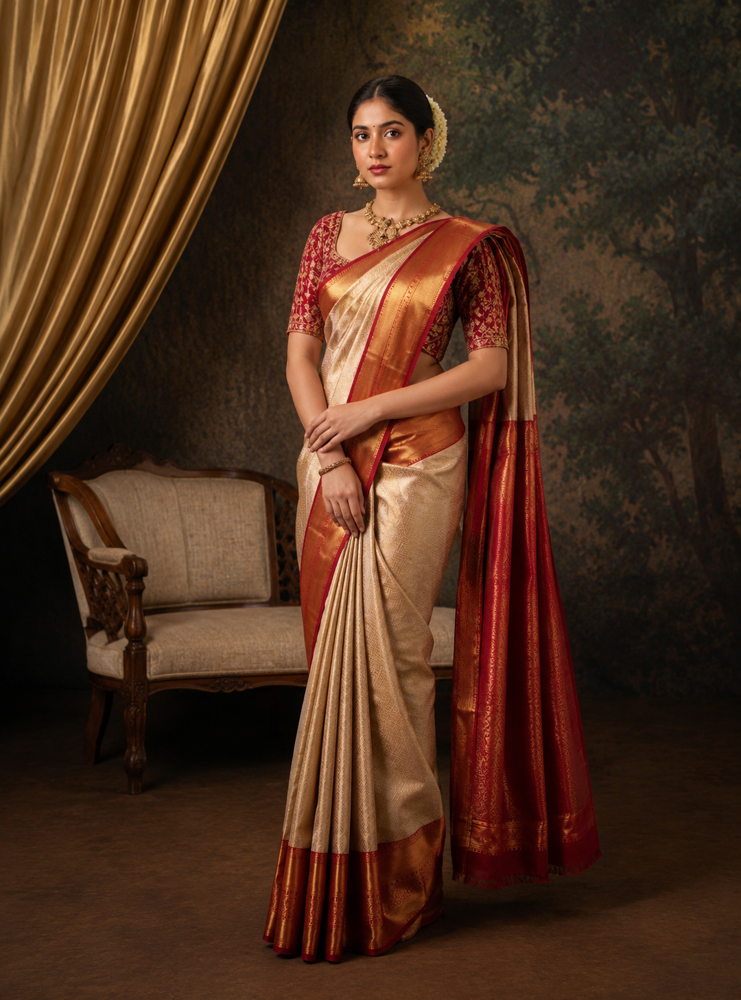

Our Story
A little garden of silk, in the heart of Tiruvallur
VasMur began as a family's love for the saree — the way it holds a hundred years of weaving craft in six yards, and the way a well-cut chudidar can make a Tuesday feel like an occasion. We travel to source directly from weaving clusters, so every zari border and every hand-block print reaches you with its story intact.
Today, VasMur Sarees is a name families in Chennai and Tiruvallur turn to for weddings, poojas, and the everyday elegance in between.